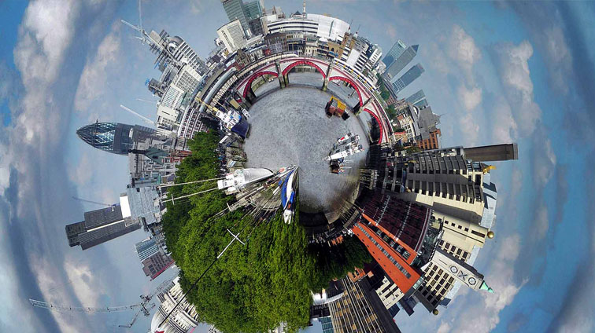
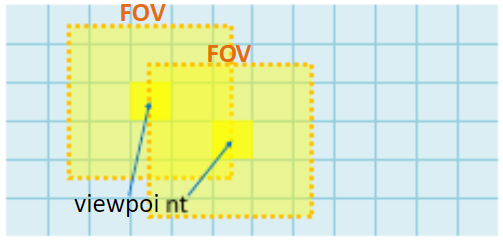

Predictive FOV
Generation

One of the first approaches to reduce computation and bandwidth for 360 video was to only render and display the current Field of View (FOV) that the user is currently viewing. Generally, 360 video is rendered as a  2D "fisheye" video projected onto a sphere, meaning that the entire video space around the user is rendered or streamed. The right picture shows an example video frame that would be projected onto a sphere around the user. Clearly, only rendering the small portion of the frame that the user is currently viewing will greatly reduce computation and bandwidth.
Unfortunately, the extra time required to determine the user's viewpoint in real-time adds latency. Latency is potentially the largest complication for 360 video. VR is interactive video, it is meant to emulate real life as close as possible. Adding a delay to video rotations will detach the video from what the user expects, thus likely inducing motion sickness. Xueshi Hou et al propose a deep-learning based viewpoint prediction model to determine the next FOV frame to be generated. By predicting the next FOV in advance, latency is effectively removed.
Viewpoint Prediction Model
Xueshi Hou et al attained data for over 36 000 viewers of various interactive 360 videos. The diversity of videos and amount of viewers should allow for consistent result. The data includes head position, rotation, and velocity temporal data taken every 200ms over each video's duration. By separating the head rotational motion vector and speed from the velocity, certain periods of data can be categorized as a medium motion sequence ("regular" movement) or a high motion sequence (high speed unpredictable movement). The sequences are fed separately into the deep-learning model.
 The 360-degree view can be divided into 72 tiles. The rotational temporal data is converted into a one-hot 72x10 matrix representing possible viewpoints with a lookahead of 2 seconds (72 possible tiles within view and 200ms*10 = 2 seconds of lookahead). The data is trained on a Long Short-Term Memory (LSTM) neural network model. The model will attempt to predict one or multiple tiles that the viewpoint will be in for the next point. Xueshi Hou et al trained 90% of the data and tested 10%.
FOV Generation
A predicted FOV can be generated by selecting the group of tiles with the highest concentration of 1's within the 72x10 viewpoint prediction matrix. The area of the video projected sphere corresponding to this FOV is then rendered and transmitted in high quality, and the rest of the video sphere is either not rendered, or transmitted in low quality. By increasing the number of tiles in a group, the success rate increases, but this counteracts the initial objective by also increasing computation and bandwidth.
Xueshi Hou et al were able to attain a consistent FOV viewpoint prediction accuracy of 95%. Even when reducing the number of tiles in the generated FOV to as low as 4, the accuracy still maintained a consistent 95%. This results in a bandwidth reduction (pixel saving) of up to 71%. This demonstrates that the LSTM model for viewpoint prediction can significantly lower computation and bandwidth while maintaining the perceived video quality by the user.
Further Reading: Predictive View Generation to Enable Mobile 360-degree and VR Experiences